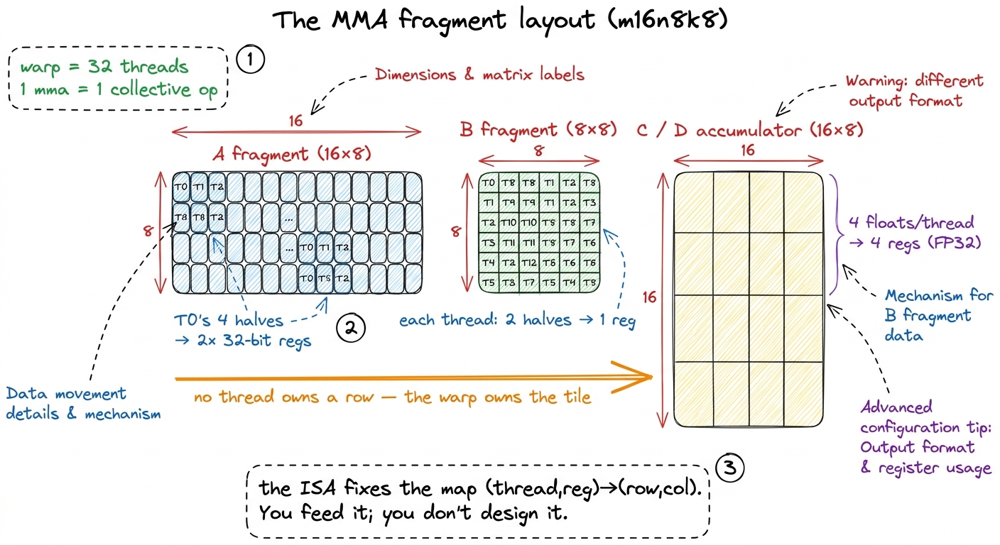
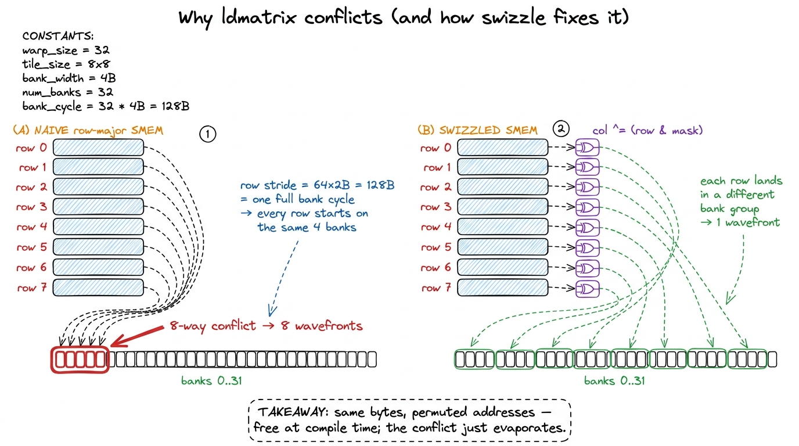
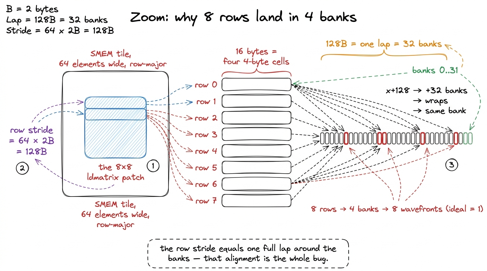
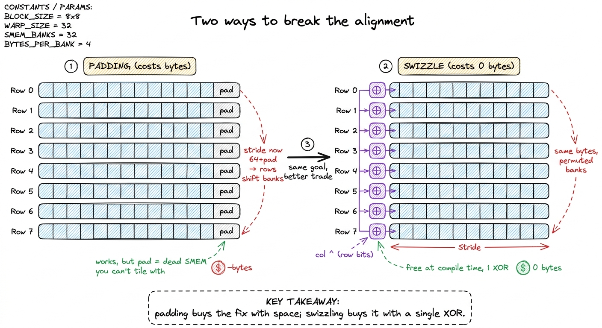
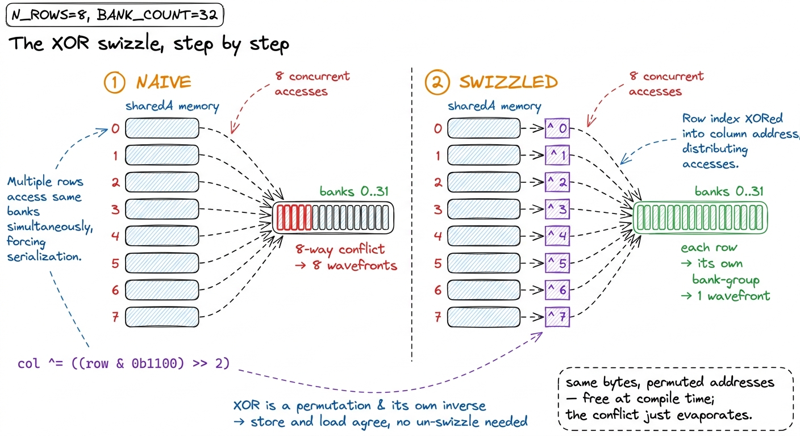
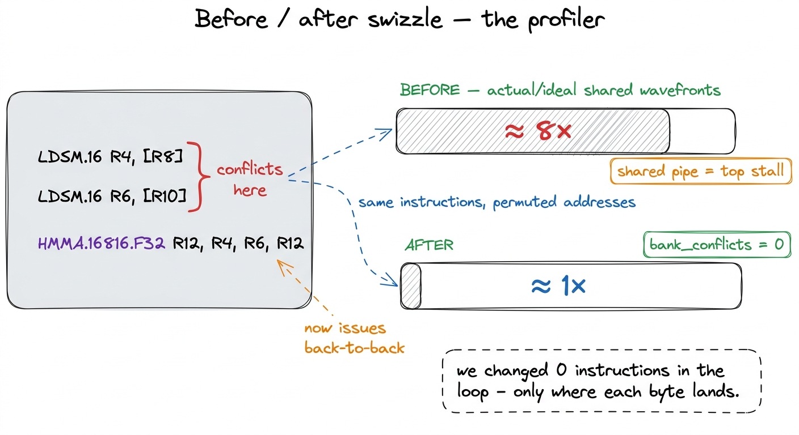
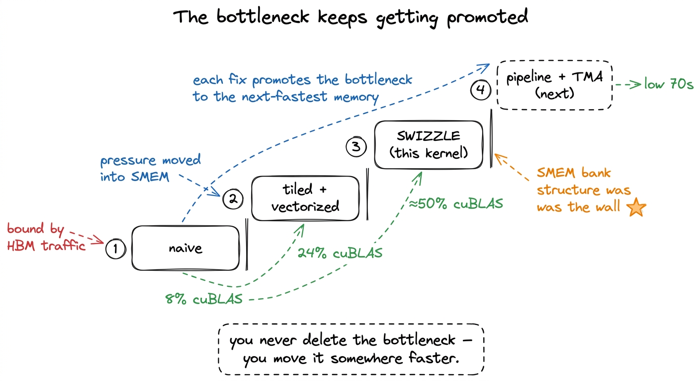
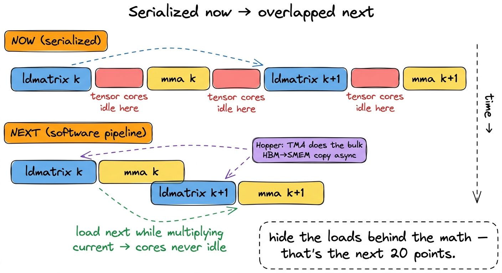

Tensor cores II: fragments & swizzling TC
In the previous kernel we finally lit the tensor cores: we issued a real mma instruction and watched the throughput jump. But we left a splinter under the fingernail. The profiler reported that our shared-memory loads on the tensor-core feed path were running at roughly eight times the ideal number of wavefronts — an 8-way bank conflict, hiding in plain sight, throttling every single MMA we issue.
This kernel is about pulling that splinter out. The tool for the job is one of the strangest-looking tricks in the whole ladder: we are going to deliberately scramble the addresses we write into shared memory so that they come back out clean. If that sounds like it should break the math, good — that reaction is exactly the thing to interrogate. By the end you will see why it does not break anything, why it costs zero extra bytes and one XOR, and why it moves us from about a quarter of cuBLAS to about half.
Before we can swizzle anything, though, we have to understand a fact we quietly skipped in the last kernel. On a tensor core, the warp is the unit of work, and the operands do not live where a beginner would guess they live. So the plan is: first the fragments (who holds what), then the bank conflict (why the feed path stalls), then the swizzle (the fix), then the profile and the number. One idea at a time.
The one question this article answers
Here is the whole article in a sentence. When 32 threads of a warp cooperatively pull an 8×8 tile of FP16 out of shared memory to feed a tensor core, why do their addresses collide onto only four memory banks — and how do we spread them across all thirty-two without moving a single element to a different row?
If you have never heard the words bank conflict or fragment before, do not worry. We are going to build both from the ground up. The only thing you need coming in is the mental model from the shared-memory kernel: we stage small tiles of the big matrices A and B in fast on-chip shared memory (SMEM), a scratchpad each block of threads shares, so that we read each element from slow global memory once and then reuse it many times from the scratchpad. Everything below happens inside that scratchpad.
The central mental model: the scratchpad is a parking lot with 32 gates
Hold onto this picture, because we will lean on it the entire way. Think of shared memory as a parking lot, and the data as cars. The lot has 32 gates — these are the banks. Every car (every 4-byte word) is assigned to exactly one gate by a fixed rule. In one cycle, the lot can let one car through each gate — up to 32 cars at once, beautifully parallel — if and only if the 32 cars a warp wants are spread across 32 different gates.
But if two cars both need to go through gate 7, they cannot go at the same time. They queue. Two cars, one gate: two cycles. Eight cars funneled into gate 7 through gate 10 (four gates, eight cars, so two per gate)… well, that is where our story starts, because that is exactly the traffic jam the profiler found. The whole swizzle trick is nothing more than re-assigning cars to gates so the queue disappears — without towing any car to a different parking spot.

figure rendering · Shared memory has 32 banks. A warp's 32 lanes go fast only when theirKeep the lot in mind. Now let us find out why the tensor-core feed path parks all its cars in front of four gates.
Who holds what: the register-fragment layout
A CUDA core — the ordinary scalar ALU — takes its operands from a single thread's private registers. Thread 5 multiplies thread 5's a by thread 5's b. Simple, local, one thread's business.
A tensor core does not work like that. It consumes a small dense matrix multiply — for the shape we are using, mma.sync.aligned.m16n8k8 — as a collective operation across all 32 threads of a warp.1 We use the m16n8k8 shape (16×8 output, K=8) that the tensor-core reference builds on. There are wider shapes such as m16n8k16 that halve the instruction count along the contraction dimension, but they do not change the fragment-layout or bank-conflict story; the win we are after is identical. Read that again, because it is the crux. The 32 threads pool their registers, the hardware reads that pool as three little matrices, multiplies them, and writes the result back into the same pooled registers. No thread ever holds a full row or a full column. Each thread holds a scattered handful of elements, and the map from (thread, register) to (row, col) is fixed by the instruction set — you do not get to choose it.
Let us make the shape concrete, because "collective" is vague until you count. For m16n8k8 in FP16 with an FP32 accumulator:
- The A fragment is
16×8= 128 elements. Spread over 32 threads, that is 4 elements per thread. Packed twohalfs to a 32-bit register, each thread carries A in two registers. - The B fragment is
8×8= 64 elements. Over 32 threads that is 2 elements per thread — one register. - The C/D accumulator is
16×8= 128 elements, but in FP32, onefloatper register, so 4 elements = four registers per thread.
Add it up: to do one m16n8k8 MMA, each of the 32 threads must have loaded its own little pile of A and B values into exactly the right registers. Thread 0's piece of A is not "row 0" — it is elements (0,0) and (0,1) in one register pair, plus two more elements mirrored down in the bottom-left quadrant of the 16×8 tile.2 The exact per-thread mapping is spelled out in the PTX ISA's MMA layout tables. You almost never write it by hand; you either use the ldmatrix instruction we are about to meet, which produces the layout for you, or a library like CUTLASS that hides it. The point for us is only that the layout is fixed, interleaved, and not row-major. The layout is neither row-major nor column-major. It is an interleaved, quadrant-based pattern the tensor core was physically wired to expect.

figure rendering · The three fragments of a single m16n8k8 MMA. Each of the 32 threads owNow the sharp practical consequence. We staged tiles of A and B in shared memory as ordinary row-major arrays — that is the natural way to copy a tile out of global memory. But the tensor core wants the quadrant-interleaved fragment arrangement, not a contiguous row. If we tried to build the fragment with ordinary indexed loads, each thread reaching into shared memory for "its" four scattered elements, we would need a storm of scalar loads and cross-thread shfl shuffles. Slow, and ugly.
So Ampere — and Hopper after it — gives us a dedicated instruction: ldmatrix. One ldmatrix.sync issued by the warp reads one to four 8×8 patches of FP16 out of shared memory and deposits them straight into the 32 threads' registers already in fragment layout, doing all the cross-thread shuffling in hardware. It compiles to a single LDSM SASS instruction. The way you call it is the key detail for everything that follows: each thread supplies one shared-memory address — the base address of one row — and the warp gathers all eight rows of the 8×8 tile in one shot.
That last sentence is the bridge to our problem. ldmatrix is where "how we stored the tile" meets "how the tensor core reads it." And it is exactly on this bridge that the bank conflict lives. Let us go find it.
The bank conflict, made concrete
First, the specs of the parking lot, stated precisely so the arithmetic is honest. Shared memory on an H100 is carved out of the 256 KiB the SM splits between L1 and scratchpad — up to about 228 KiB usable as pure SMEM — and it is organized into 32 banks, each serving 4 bytes per cycle.3 The 228 KiB is not exact; the L1/SMEM split is configured in fixed steps and a sliver is reserved. The bank count (32) and the 4-byte word, however, are exact and have been stable across many GPU generations, including the T4 the tensor-core reference benchmarks on. The rule that maps a byte address to a gate is simple: successive 4-byte words go to successive banks, wrapping every 32. So the bank of a word at byte offset x is (x / 4) mod 32. Equivalently, the bank pattern repeats every 32 × 4 = 128 bytes. Memorize that number — 128 bytes is one full trip around all 32 banks. It is about to do all the work.
Now look at what ldmatrix actually asks the lot for. To assemble one A fragment, the warp hands over the addresses of the 8 rows of an 8×8 half-precision tile. Fine. But that little 8×8 tile does not sit alone in shared memory. It lives inside a much wider SMEM tile we staged from global — say the tile is 64 elements wide — and it is stored row-major. So two consecutive rows of our 8×8 sub-tile are not 16 bytes apart. They are one full width apart: 64 elements × 2 bytes = 128 bytes.
Do you see it yet? Let us do the by-hand arithmetic, because this is the whole ballgame.
- Row 0 of the sub-tile starts at some byte offset
x. Its bank is(x/4) mod 32. - Row 1 starts at
x + 128. Its bank is((x + 128)/4) mod 32 = (x/4 + 32) mod 32 = (x/4) mod 32. The same bank as row 0. - Row 2 starts at
x + 256. Same story:+256/4 = +64 = +2×32, wraps to the same bank again.
Every one of the 8 rows begins at the same bank offset, because the row stride (128 bytes) is exactly one lap around the banks. And each row's eight half values (16 bytes = four 4-byte words) span the same four consecutive banks. So rows 0 through 7 all park in the same four banks. Eight cars, four gates: two cars per gate is only half the story, because ldmatrix needs all eight rows for one fragment, and the hardware serializes the whole gather into eight wavefronts where an ideal, spread-out access would take one. That is the 8-way conflict the profiler flagged, and it fires on every ldmatrix on the critical path feeding the tensor cores.

figure rendering · The tile's width makes each row start exactly one bank-lap (128 bytes)I want to pause on why this is surprising, because it caught me off guard the first time. We did nothing wrong. We stored the tile the obvious way — row-major, tightly packed, the same layout that made the global-memory loads beautifully coalesced. The conflict is not a bug in our loop; it is an emergent collision between two innocent facts: the tile happens to be 64 wide, and 64 halves happens to be exactly one bank-lap. Change the width and the specific collision changes, but for tensor-core tiles the widths we want (multiples of the 8-wide MMA unit) keep landing on these unfortunate alignments. The problem is structural, which is why the fix has to be structural too.
First instinct: padding (and why we can do better)
The textbook fix for bank conflicts is padding. If the row stride is the problem, break the stride. Store each 64-wide row as 64 + pad, so that successive rows no longer start one clean lap apart. A well-chosen pad shoves each row into a different set of banks. This genuinely works — the SGEMM ladder for FP32 uses exactly this trick, padding a 128-wide A tile to a leading dimension of 132 (four float32s of padding) so that threads within a transaction hit distinct banks.4 In that FP32 kernel the padding is 4 floats = 16 bytes, and the double-buffered A block is deliberately sized to 2 × 256 × 8 × 4 = 16,384 bytes so the address stays power-of-two aligned and the buffer swap is a single XOR of the address. Padding and swizzling are cousins; both perturb the address, one with slack space, one with arithmetic.
But padding has two costs. First, it wastes shared memory — the padding columns are dead bytes, and shared memory is the scarcest resource we have. Every byte we spend on padding is a byte we cannot spend on a bigger tile, and bigger tiles are how we get arithmetic intensity up. Second, padding composes badly as tiles get wide and as we start double-buffering; the "right" pad becomes a fussy function of every dimension.
So here is the natural question: can we get the address to move without spending any bytes at all? Can we break the deadly alignment using pure arithmetic instead of dead space? Yes. That is the swizzle.

figure rendering · Padding breaks the bad alignment by inserting dead columns. SwizzlingThe swizzle: XOR the column with the row
The insight rests on two facts we already have. One: which bank a word lands in is decided by the low bits of its address (bits 2 through 6, for a 4-byte word across 32 banks). Two: XOR is a permutation — for any fixed mask m, the function x → x ^ m is a bijection; it never maps two inputs to the same output, and it is its own inverse.
Now combine them. Before we store an element at logical position (row, col), we perturb its column index by XOR-ing in a few bits of its row index. This shuffles each row's elements into a different set of banks — a different lap-offset per row — without moving any element to a different row, and without spending one extra byte. And here is the part that makes it safe: reads apply the same permutation as writes, so every element is fetched from exactly where it was put. The data comes back bit-for-bit correct. The only thing that changed is which gate each car queues at.
For a tile whose swizzle unit is the natural 8-wide MMA width, the permutation looks like this:
// logical (row, col) -> swizzled column within the SMEM tile
__device__ __forceinline__
uint swizzle(uint row, uint col) {
// XOR the column's low bits with a slice of the row bits.
// The SAME permutation is applied on store and on the
// ldmatrix address computation, so nothing needs un-swizzling.
return col ^ ((row & 0b1100) >> 2);
}If you prefer to see it against the flat offset the way the tensor-core reference writes it, the identical idea reads f(i) = i ^ ((i & 0b1100) >> 2) — take a couple of the row-selecting bits and XOR them into the bank-selecting field of the index.5 The exact mask depends on the tile's element size and width. The invariant is what matters: the XORed bits must land in the address field that selects the bank (bits 2–6 for a 4-byte word across 32 banks), and the permutation must be within each row so no element is lost or aliased to another element's slot. Get the mask wrong and you either don't fix the conflict or you corrupt the tile.
Let us verify by hand that it does what we claimed, and let us be honest about the bookkeeping, because this is exactly the spot where a hand-wavy explanation would let a bug through. First, fix the unit we are counting in. Each row of the 8×8 patch is eight halfs = 16 bytes = four consecutive 4-byte words = one bank-group (four of the 32 banks). So "which bank-group does row r land in" is decided by the bits of the address above the bottom four bits — call that field g, running 0..7 around the eight possible bank-groups in a 128-byte lap. Before swizzling, all eight rows share the same g; that is the collision. The swizzle's whole job is to give each row r its own g.
The formula does that by XOR-ing a slice of the row index into g. Write the row as its bits r = (r₂ r₁ r₀). The reference dimensions the mask so that the value XORed into the bank-group field is just the row number itself, r. Walk all eight rows and watch g move (start each row at the same natural group G, and let ⊕ act on the group field):
- Row 0 →
G ⊕ 0 = G. Untouched. - Row 1 →
G ⊕ 1. A different group. - Row 2 →
G ⊕ 2. Different again. - Row 3 →
G ⊕ 3. … - Rows 4,5,6,7 →
G ⊕ 4,G ⊕ 5,G ⊕ 6,G ⊕ 7.
Because ⊕ against the eight distinct constants 0..7 is a bijection on the eight groups, the eight rows land in eight distinct bank-groups — the set {G⊕0 … G⊕7} is just the eight groups in a scrambled order. No two rows share a group, so no two rows contend for a bank.6 Why the two-argument swizzle(row, col) in the code above looks like it only touches two bits ((row & 0b1100) >> 2) while the flat-index walk uses all three row bits: the two forms are dimensioned for different element/word sizes. What is invariant is that the number XORed into the bank-group field ranges over as many distinct values as there are rows in the patch, so every row gets a distinct group. If your mask produces fewer distinct values than rows — say only {0,1} for eight rows — you get a 4-way conflict instead of zero, which is the classic "my swizzle only half-worked" symptom.
The clean way to say it: we XOR a distinct slice of the row bits into the bank-group field, so the eight rows that used to pile into four banks now fan out to occupy eight distinct bank-groups — the parking-lot jam clears, and the ideal one-wavefront access is restored.7 "Bank-group" here means the set of four consecutive banks a single 16-byte row occupies. With eight rows each nudged to its own group of four, the 32 banks are fully and evenly used, which is why the actual/ideal wavefront ratio falls all the way to ~1 rather than merely improving.

figure rendering · Left: eight rows collapse into four banks. Right: XOR-ing a slice of tThe code change is almost insultingly small. Everywhere we compute a shared-memory address — the float4 (or uint4) stores when we copy tiles in from global memory, and the per-row addresses we hand to ldmatrix — we route the column through swizzle(). That is it. No new buffers, no padding, no extra instructions in the hot loop beyond a single XOR that the compiler folds directly into the address arithmetic it was going to compute anyway. The store side and the load side apply the same function, so they stay in perfect agreement and we never have to "un-swizzle" on the way out.
This is the moment to appreciate why the trick is safe rather than magical. A permutation of addresses within a row is just a relabeling of parking spots. As long as everyone who reads or writes the tile uses the same relabeling, the tile is identical to what it was — you could not tell from the data that anything happened. Only the bank the hardware computes is different, and that difference is precisely the thing we wanted to change.
The profile: the conflict is gone
Predict, then measure — the discipline that keeps kernel work honest. The hypothesis is specific and falsifiable: the swizzle should take the bank-conflict counter l1tex__data_bank_conflicts_pipe_lsu_mem_shared on the LDSM/ldmatrix instructions from an 8-way conflict down to zero. Equivalently, the ratio of actual shared-memory wavefronts to ideal wavefronts should drop from roughly 8× to 1× on exactly those instructions. If the swizzle is the right fix, that ratio is where we will see it.
That is exactly what Nsight Compute shows. Before the swizzle, the source-level view attributes a mountain of shared-load wavefronts to the ldmatrix lines, and the "Memory Workload Analysis" section names the shared pipe as the top stall reason — the tensor cores are sitting idle waiting for the scratchpad. After the swizzle, the bank-conflict counter on those same instructions reads 0, the actual-to-ideal wavefront ratio sits at about 1.0, and the top stall migrates off the shared-memory pipe entirely.8 A residual ratio a hair above 1.0 is normal; it comes from the tail of tiles that don't fill a full warp's worth of rows and from address-generation overhead. The thing you are watching for is the collapse of the 8× factor, not a literal 1.000. If you still see 2× or 4×, your mask is landing in the wrong bits.

figure rendering · The `ldmatrix` (LDSM) instructions are byte-for-byte unchanged; only tldmatrix (LDSM) instructions are byte-for-byte unchanged; only the shared-memory addresses moved. The 8-way conflict on the tensor-core load path drops to zero and the stall leaves the shared pipe.Notice what did not change in that SASS listing: the instructions. Same LDSM, same HMMA, same registers. The only thing the swizzle touched was the value inside the address register — where each byte lives. That is the signature of a great optimization on this ladder: you do not add work, you rearrange where existing work reaches, and a whole class of stalls disappears.
The number
With the load path unblocked, every MMA that was previously stalling on shared memory now issues back-to-back. The ldmatrix feeds the tensor core at the rate the tensor core can actually consume, and the warp's effective tensor throughput roughly doubles.
On the 8192 × 8192 benchmark, this kernel lands at about 50% of cuBLAS — up from roughly 24% where the conflict-throttled version sat, a clean ~2× jump from removing a single structural stall.9 The exact multiplier depends on how memory-bound the pre-swizzle kernel was. The more of your runtime was hidden behind the 8× conflict, the bigger the win. In this configuration the conflict was the dominant stall, which is why one permutation moves the number this far; on a kernel that was already compute-bound elsewhere, the same fix would move it less. Fifty percent of cuBLAS from a permutation that costs zero bytes and one folded-in XOR is, pound for pound, one of the best trades on the entire ladder. It is the tensor-core analogue of the coalescing fix back in the FP32 GEMM worklog, where a one-line reassignment of threads to elements sharply lifted throughput — a tiny change to addresses, not to arithmetic, that unclogged the pipe.
It is worth stepping back to see why this whole class of win keeps existing as we climb. By the logic of the three regimes, we are still fighting a memory-movement battle — we have just pushed it one level up the hierarchy each time. The naive kernel drowned in HBM traffic. The tiled kernel moved that pressure into shared memory. And now the shared-memory bank structure was the wall. Each optimization does not really eliminate the bottleneck; it promotes it to the next-fastest memory. The swizzle is the move that finally lets shared memory feed the tensor cores at full rate, so the next bottleneck can be something faster still.

figure rendering · Each rung of the ladder relocates the bottleneck to a faster tier of mBridge to the next kernel
We are at 50% of cuBLAS, and for the first time the tensor cores are no longer starved by the scratchpad. So the honest next question is: where does the next stall come from?
It comes from a subtlety we have been ignoring. Our ldmatrix and our mma still take turns. The warp loads a fragment, then multiplies it, then loads the next fragment, then multiplies that one. And while it is loading, the tensor cores are idle — the very units we worked so hard to feed are sitting on their hands during the load. The load and the math are serialized when, in principle, they could overlap: nothing about tile k's multiply depends on tile k+1's load, so why not do them at the same time?

figure rendering · Right now each load blocks the following multiply. The next kernel oveThe fix is a software pipeline: issue the ldmatrix for tile k+1 while the mma for tile k is still running, so the loads hide behind the math and the tensor cores never go idle. And on Hopper, we feed that pipeline from HBM using the Tensor Memory Accelerator (TMA), a dedicated engine that does bulk asynchronous copies without burning threads on address math. That is the next kernel, where we stop reasoning about single instructions and start reasoning about the timeline — and it is what carries us from 50% of cuBLAS up toward the low-70s and beyond.